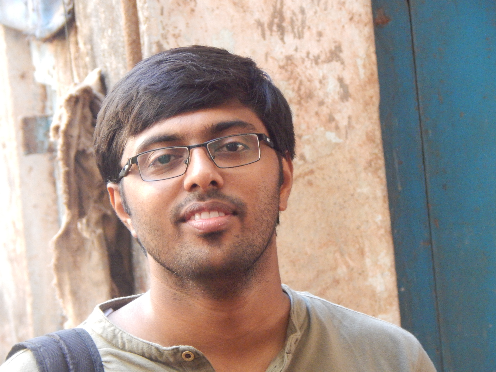

|  |
Aniruddh Rao KabbinaleLead Research EngineerSiemens India Bengaluru, Karnataka India Email: aniruddhrao.kabbinale[AT]siemens.com, ark54[AT]cam.ac.uk, aniruddh.kabbinale[AT]gmail.com, anirudh.kabi[AT]ee.iitb.ac.in Mobile: +918454992356 |
| Home | | | Research, Work Experience and other academic projects | | | More about me |
|
I am currently working as a Lead Research Engineer at Siemens India, Bengaluru. I am exploring blockchain based solution for baggage tracking in airport along with a baggage tracking company owned by Siemens called AXIT. Earlier, I was working as a researcher for an year at Computer Laboratory, University of Cambridge with Arjuna Sathiaseelan, as a member of N4D Lab. Before joining this Lab, I was working with TCS Research as a Researcher in Network and Embedded systems group for an year (July 2016 - July 2017). At TCS, I worked on research problems related to LTE for IoT and robotic communications. I did my Master's in communication engineering from Department of Electrical Engineering, IIT Bombay graduating in 2016. At IITB, I was associated with PC Lab and worked as a system administrator of the Dept. At IIT Bombay, I was also associated with InfoNet Lab and work as a research assistant (RA) with Prof. Abhay Karandikar. Earlier, I obtained my Bachelors degree in Electronics and Communications Engineering from Siddaganga Institute of Technology, Tumkur in 2011. I then worked with Huawei Technologies India Pvt. Ltd. for an year and 3 months from july 2011 to November 2012. At Huawei, I was part of OSS-BSS team. I worked on inventory management, order management and provisioning of services in telecom networks. My Research interests are towards wireless networks, Internet of Things and recently into Blockchains. |